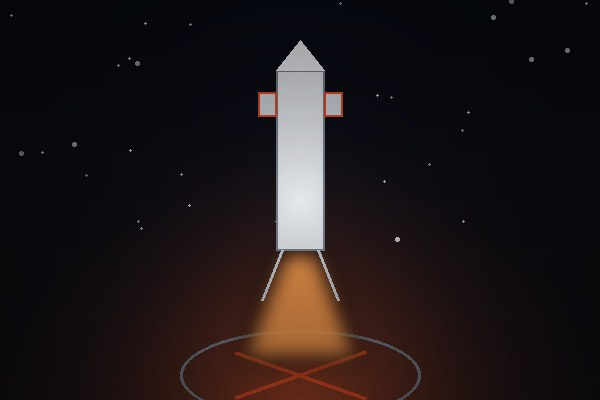

■ MISSION CRS-31 FALCON 9 . BLOCK 5
DESTINATION
DESTINATION
MARS
SpaceX diseña, fabrica y lanza cohetes reutilizables para reducir el coste del acceso al espacio y hacer la vida multiplanetaria[cite: 1].
MISSION MANIFEST
REV 2.0
- FUNDADA 2002
- LANZAMIENTOS 450+
- ATERRIZAJES 400+
- TRIPULACIÓN ISS 50+
- STARLINK 6.000+ sat
-- BRIEFING 01
EL PROGRAMA DE VUELO
Fundada en 2002, SpaceX revolucionó la industria aeroespacial al desarrollar el primer cohete orbital de clase reutilizable, el Falcon 9, capaz de aterrizar y volver a volar[cite: 1].
La nave Starship, totalmente reutilizable, está diseñada para transportar tripulación y carga a la Luna, a Marte y más allá, reduciendo drásticamente el coste por misión[cite: 1].
En paralelo, la constelación Starlink ofrece conexión a internet de alta velocidad desde la órbita terrestre baja a cualquier punto del planeta[cite: 1].

FIG. 01 -- FALCON 9 -- MARS
SCALE 1:140
EMPUJE
7.6 MN
CARGA A LEO
22.8 t
REUTILIZACIÓN
20+ vuelos